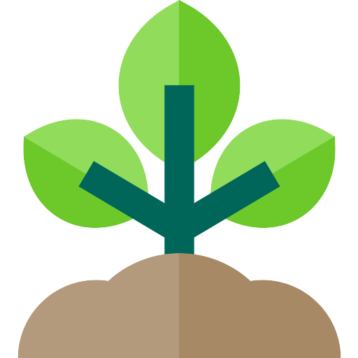

Desvendando os Segredos do Plantio Agrícola 
O plantio agrícola é a base da nossa alimentação e da vida no planeta. É a arte e a ciência de cultivar o solo para produzir alimentos, fibras e outros produtos essenciais para a sociedade. Através do plantio, transformamos sementes em plantas viáveis e colhemos os frutos do nosso trabalho, nutrindo a nós mesmos e ao mundo ao nosso redor.

Explore nossos conteúdos!
 Técnicas de plantio
Técnicas de plantio